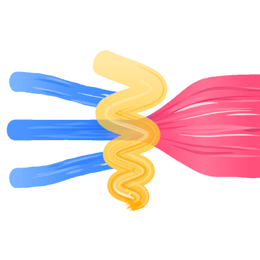

Noti
Notification filter for Android, by TaroThanTaro
Noti sits between your apps and your notification shade. Every notification passes through Noti first, and your filter decides what gets through.
What it does
- Filter: show only the apps you list, or block the apps you list. Blocked notifications leave the shade but stay in History.
- History: every notification is recorded, and tapping one opens it as if you had tapped the original, even if it was blocked.
- Alerts: give the apps that matter their own sound and vibration.
- Noti Plus (one-time in-app purchase): matches filter and alert on the words in a notification, such as blocking only an app's promotions or ringing only for “urgent”.
Privacy
Noti has no internet permission: your notifications are processed and stored only on your device and are never shared. No ads, no analytics, no account. Read the privacy policy.